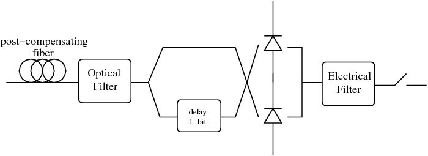
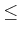
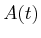
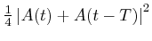
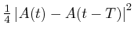
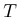
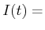
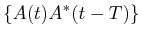

receiver_dpsk
Complete DPSK receiver (POST fiber+OBPF+MZ+LPF).
IRIC=RECEIVER_DPSK(ICH,X)
[IRIC,SN]=RECEIVER_DPSK(ICH,X)
IRIC=RECEIVER_DPSK(ICH,X) returns the received current IRIC
of channel ICH of an DPSK transmission using the following
receiver:
Figure 2.8:
DPSK receiver.
|

|
[IRIC,SN]=RECEIVER_OOK(ICH,X) also returns the vector
SN containing the FFT coefficients of the electric field
after the optical filter. SN is used by ber_kl.
X is a structure of fields:
- X.oftype = optical filter (OBPF) type (see myfilter)
- X.obw = OBPF 3 dB bandwidth normalized to the symbol rate.
- X.oord = optical filter order (for special filters, see myfilter)
- X.eftype = electrical filter (LPF) type (see myfilter)
- X.ebw = LPF 3-dB bandwidth normalized to the symbol rate.
- X.eord = electrical filter order (for special filters, see
myfilter)
Optional parameters of X:
- X.dpost = post compensating fiber cumulated dispersion [ps/nm]
- X.slopez = post compensating fiber cumulated slope [ps/nm^2]
- X.lambda = wavelength [nm] at which the post compensating fiber
has a cumulated dispersion equal to X.dpost.
- X.b2b = 'b2b' evaluates the current in back-to-back configuration,
i.e. with the transmitter connected directly to the receiver. With
this option the values of x.dpost and x.slopez are
discarded.
- X.mzdel = specify the delay of the upper brace of the MZDI
interferometer for DPSK. The default delay is 1 and it must be comprised
in the interval 0  X.mzdel 1. Setting mzdel to a value
smaller than 1 implements the Partial DPSK (P-DPSK) [18].
The post-compensating fiber is assumed as a purely ideal-linear fiber,
while the photodiodes are ideal (abs(.)^2).
|
Note: This function works over a copy of the electric field.
All fields of the global variable GSTATE are left unchanged. |
Calling  the electric field at the output of the optical filter,
the current received by the top photodiode is
,
while the current received by the bottom photodiode is
.
 is the bit time. After the differential operation, the current
at the input of the low pass filter is:
Re
In Optilux delaying the electric field by seconds corresponds
to a circular shift of GSTATE.NT points. See _description
for more details.
receiver_ook , receiver_dqpsk
Optilux toolbox reference manual